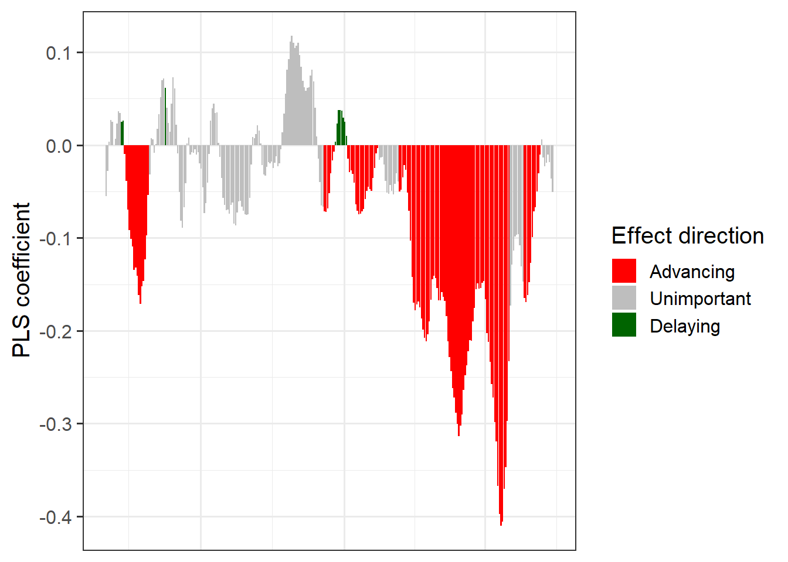
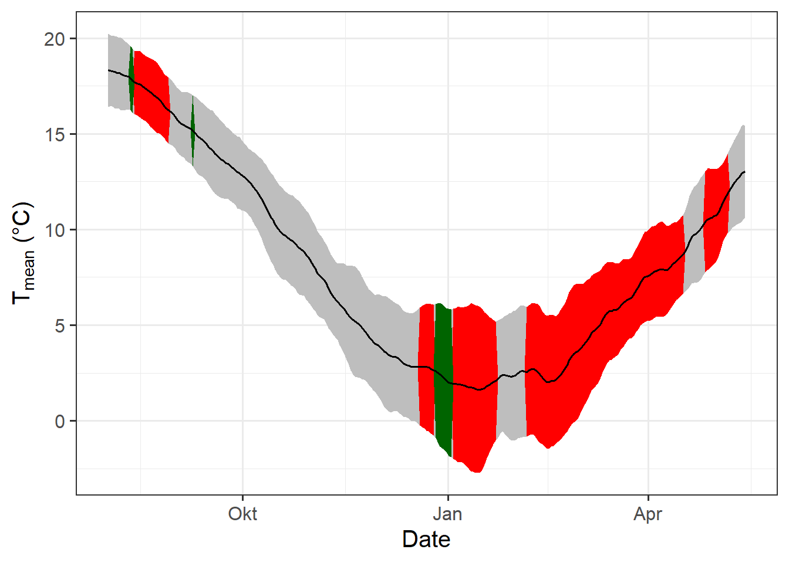
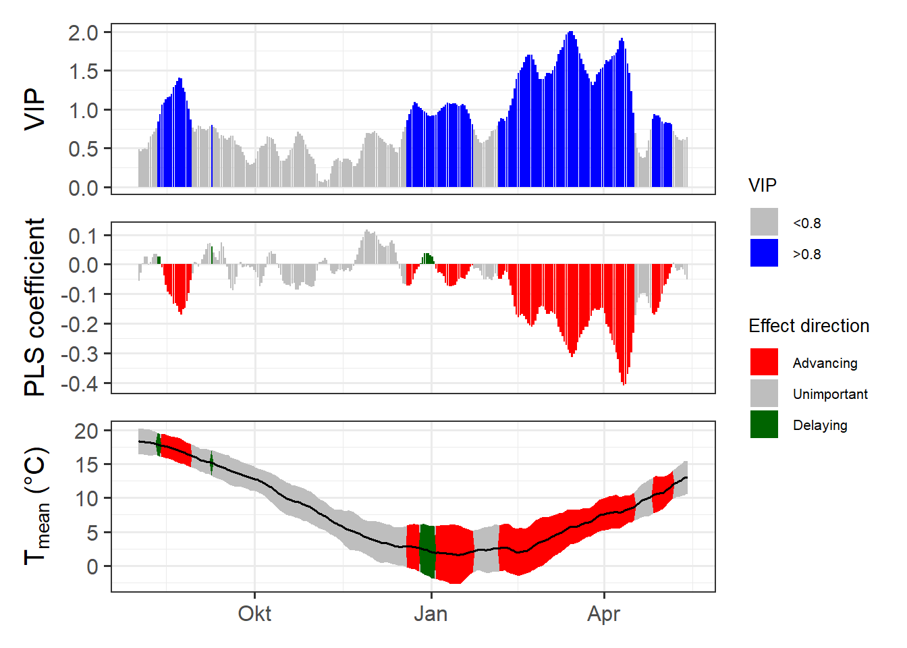

Chapter 21 — Delineating temperature response phases with PLS regression
In this chapter, Partial Least Squares (PLS) regression is used to explore how temperature signals relate to phenological timing and why such results must be interpreted with caution and biological context.
Interpreting PLS results with caution
Briefly explain why you shouldn’t take the results of a PLS regression analysis between temperature and phenology at face value. What do you need in addition in order to make sense of such outputs?
- PLS can detect patterns even when data contain a lot of noise
- Phenology datasets are small (≈ 40–60 years) compared to the number of temperature variables
- Results can be unstable and sensitive to random variation
- VIP scores and coefficients are not proof of causation
- Biological theory (chilling → forcing → bloom) is required to interpret results meaningfully
- Only broad, consistent patterns should be interpreted, not small fluctuations
Replicating the PLS analysis for ‘Roter Boskoop’
Replicate the PLS analysis for the Roter Boskoop dataset that you used in a previous lesson.
Load packages
Prepare phenology data
Roter_first <- read_tab("data/Roter_Boskoop_bloom_1958_2019.csv") %>%
select(Pheno_year, First_bloom) %>%
mutate(
Year = as.numeric(substr(First_bloom, 1, 4)),
Month = as.numeric(substr(First_bloom, 5, 6)),
Day = as.numeric(substr(First_bloom, 7, 8))
) %>%
make_JDay() %>%
select(Pheno_year, JDay) %>%
rename(
Year = Pheno_year,
pheno = JDay
)Prepare temperature data
Run PLS analysis
## Date JDay Coef VIP Tmean Tstdev
## 1 801 -152 -0.0550839319 0.4813947 18.32970 1.914004
## 2 802 -151 -0.0280285625 0.4583224 18.30846 1.884389
## 3 803 -150 0.0034427515 0.4856287 18.27148 1.844368
## 4 804 -149 0.0267715221 0.4904789 18.23742 1.886276
## 5 805 -148 0.0250187439 0.4832248 18.19609 1.884567
## 6 806 -147 -0.0003849407 0.5708911 18.17148 1.855337Reshape PLS output for plotting
PLS_gg <- PLS_results$PLS_summary %>%
mutate(
Month = trunc(Date / 100),
Day = Date - Month * 100,
Date = NULL
)
# Convert Month/Day to a dummy Date for plotting (spans two calendar years)
PLS_gg$Date <- ISOdate(2002, PLS_gg$Month, PLS_gg$Day)
PLS_gg$Date[PLS_gg$JDay <= 0] <-
ISOdate(2001,
PLS_gg$Month[PLS_gg$JDay <= 0],
PLS_gg$Day[PLS_gg$JDay <= 0])
# Mark important VIP periods and combine with coefficient sign
PLS_gg <- PLS_gg %>%
mutate(
VIP_importance = VIP >= 0.8,
VIP_Coeff = factor(sign(Coef) * VIP_importance)
)Plot 1 — VIP importance over the season
VIP_plot <- ggplot(PLS_gg, aes(x = Date, y = VIP)) +
geom_bar(stat = "identity", aes(fill = VIP > 0.8)) +
scale_fill_manual(
name = "VIP",
labels = c("<0.8", ">0.8"),
values = c("FALSE" = "grey", "TRUE" = "blue")
) +
theme_bw(base_size = 15) +
theme(
axis.text.x = element_blank(),
axis.ticks.x = element_blank(),
axis.title.x = element_blank()
)
VIP_plot
Plot 2 — Direction of effect (PLS coefficients)
coeff_plot <- ggplot(PLS_gg, aes(x = Date, y = Coef)) +
geom_bar(stat = "identity", aes(fill = VIP_Coeff)) +
scale_fill_manual(
name = "Effect direction",
labels = c("Advancing", "Unimportant", "Delaying"),
values = c("-1" = "red", "0" = "grey", "1" = "dark green")
) +
theme_bw(base_size = 15) +
ylab("PLS coefficient") +
theme(
axis.text.x = element_blank(),
axis.ticks.x = element_blank(),
axis.title.x = element_blank()
)
coeff_plot
Plot 3 — Mean temperature with highlighted phases
temp_plot <- ggplot(PLS_gg) +
geom_ribbon(
aes(x = Date, ymin = Tmean - Tstdev, ymax = Tmean + Tstdev),
fill = "grey"
) +
geom_ribbon(
aes(x = Date,
ymin = Tmean - Tstdev * (VIP_Coeff == -1),
ymax = Tmean + Tstdev * (VIP_Coeff == -1)),
fill = "red"
) +
geom_ribbon(
aes(x = Date,
ymin = Tmean - Tstdev * (VIP_Coeff == 1),
ymax = Tmean + Tstdev * (VIP_Coeff == 1)),
fill = "dark green"
) +
geom_line(aes(x = Date, y = Tmean)) +
theme_bw(base_size = 15) +
ylab(expression(paste(T[mean], " (°C)")))
temp_plot
Combine all plots into one figure
plot <- (VIP_plot + coeff_plot + temp_plot +
plot_layout(ncol = 1, guides = "collect")) &
theme(
legend.position = "right",
legend.text = element_text(size = 8),
legend.title = element_text(size = 10),
axis.title.x = element_blank()
)
plot
Wrap plotting into a function
ggplot_PLS <- function(PLS_results) {
PLS_gg <- PLS_results$PLS_summary %>%
mutate(
Month = trunc(Date / 100),
Day = Date - Month * 100,
Date = NULL
)
PLS_gg$Date <- ISOdate(2002, PLS_gg$Month, PLS_gg$Day)
PLS_gg$Date[PLS_gg$JDay <= 0] <-
ISOdate(2001,
PLS_gg$Month[PLS_gg$JDay <= 0],
PLS_gg$Day[PLS_gg$JDay <= 0])
PLS_gg <- PLS_gg %>%
mutate(
VIP_importance = VIP >= 0.8,
VIP_Coeff = factor(sign(Coef) * VIP_importance)
)
VIP_plot <- ggplot(PLS_gg, aes(x = Date, y = VIP)) +
geom_bar(stat = "identity", aes(fill = VIP > 0.8)) +
scale_fill_manual(
name = "VIP",
labels = c("<0.8", ">0.8"),
values = c("FALSE" = "grey", "TRUE" = "blue")
) +
theme_bw(base_size = 15) +
theme(
axis.text.x = element_blank(),
axis.ticks.x = element_blank(),
axis.title.x = element_blank()
)
coeff_plot <- ggplot(PLS_gg, aes(x = Date, y = Coef)) +
geom_bar(stat = "identity", aes(fill = VIP_Coeff)) +
scale_fill_manual(
name = "Effect direction",
labels = c("Advancing", "Unimportant", "Delaying"),
values = c("-1" = "red", "0" = "grey", "1" = "dark green")
) +
theme_bw(base_size = 15) +
ylab("PLS coefficient") +
theme(
axis.text.x = element_blank(),
axis.ticks.x = element_blank(),
axis.title.x = element_blank()
)
temp_plot <- ggplot(PLS_gg) +
geom_ribbon(
aes(x = Date, ymin = Tmean - Tstdev, ymax = Tmean + Tstdev),
fill = "grey"
) +
geom_ribbon(
aes(x = Date,
ymin = Tmean - Tstdev * (VIP_Coeff == -1),
ymax = Tmean + Tstdev * (VIP_Coeff == -1)),
fill = "red"
) +
geom_ribbon(
aes(x = Date,
ymin = Tmean - Tstdev * (VIP_Coeff == 1),
ymax = Tmean + Tstdev * (VIP_Coeff == 1)),
fill = "dark green"
) +
geom_line(aes(x = Date, y = Tmean)) +
theme_bw(base_size = 15) +
ylab(expression(paste(T[mean], " (°C)")))
(VIP_plot + coeff_plot + temp_plot +
plot_layout(ncol = 1, guides = "collect")) &
theme(
legend.position = "right",
legend.text = element_text(size = 8),
legend.title = element_text(size = 10),
axis.title.x = element_blank()
)
}
ggplot_PLS(PLS_results)
Why is the chilling response not detected?
Write down your thoughts on why we’re not seeing the temperature response pattern we may have expected. What happened to the chill response?
- The PLS results show string VIP values and negative coefficients in late winter to spring, indicating a heat response (forcing)
- in contrast, autumn and early winter temperatures show weak VIP scores and mostly unimportant coefficients, meaning chilling is not detected as influential at this point
Main reasons:
- Chilling is likely not limiting at this site
- Winter temperatures are consistently cold enough for trees to meet their chilling requirement every year
- Because chilling is always fulfilled, it does not explain year-to-year variation in bloom dates
- PLS only detects sources of variation
- If chilling does not vary in its effectiveness between the years, PLS cannot identify a chill signal
- Spring forcing temperatures vary much more and therefore dominate the statistical signal
- Chilling may occur outside the influential window
- Effective chilling may accumulate earlier in winter, when temperature variability is low or VIP values are below the threshold
Chilling is consistently fulfilled under local climate conditions and therefore does not limit bloom timing. Because it shows little year-to-year variation, PLS detects almost no chilling signal, while highly variable spring forcing temperatures dominate the results.